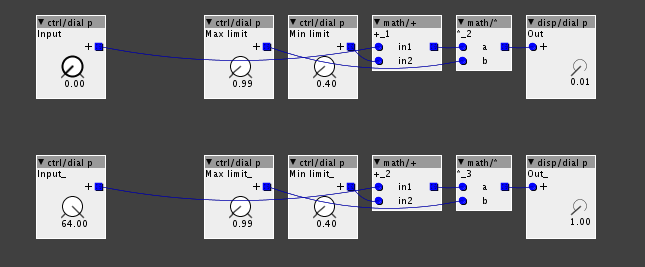

haha,
i build bass overdrives/fuzzboxes... i have quite a large collection already selfmade since i was never really satisfied with the ones to buy, or they were too expensive. 

haha,
i build bass overdrives/fuzzboxes... i have quite a large collection already selfmade since i was never really satisfied with the ones to buy, or they were too expensive.
Now that I am at home in front of my pedals, the one I refer to..
"One I picked up for $15 spans really well over the three parts, and it has separate drive and gain pots, with a switch for dual octave."
Is called the "Octave Drive" by "ARTEC" and one of the pedals I like to connect it to is the "Swollen Pickle mkII" (the only pedal I have payed full price for) by way huge. Then I connect that to my cheapo "behringer TUBE ULTRAGAIN MIC200" vac tube pre-amp to thicken it all up, played in very syncopated psychedelic patterns, so you may get an idea of the sort of bass sound I like.
Certainly I don't want to spend my time re-creating on the Axo what I already have, but it would be cool to come up with something new to what I am already familiar with. Just need to find was to start heading in the right direction.
I have tried to read as much as I can about the "Boost, Overdrive, Distortion" effect on DSP, and there is quite a lot discussed about how difficult they are to create. But with the outcome of the fuzz model, this may not necessarily be the case.
And in another way, its not such a bad thing if it cannot be created well in DSP, but maybe there is possibility for something new from the same concepts that can be spawned to replace it.
@lokki @johannes @thetechnobear
Sorry guys, is there a way to use/implement a parameter with logarithmic scale, with values between 0.01 and 1.00?
you can't change the UI without altering the patcher , if thats what you mean... you can only 'interpret' the results as you wish. (the parameter dials etc are all in the java code)
@thetechnobear i think he is simply talking about "converting" one of the dials into the right range for his code, the ui does not matter in this case.
The math could look like this if you patch it up with regular objects. This should be possible to make in code too. This keeps the values inside the range you were asking for. Not sure if it is logarithmic, though.
Scale for paco.axp (3.5 KB)
